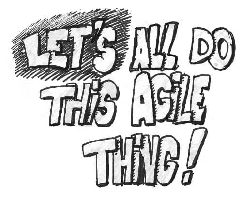

In Aesop’s famous tale, a farmer kills his goose that lays a golden egg every day to get all the eggs at once. He finds no eggs, lost his goose, and remains poor ever after.
I’ve seen the same pattern happen many times in the software industry. A team decides to become more agile. After a few years of continuous improvement, it shows largely above average performances. Managers start to notice and ask how the team got there, to replicate this success. Unfortunately, they don’t want to wait a few years for the other teams to find their own way. As a result, an “Agile” process is copy printed to all teams. Follows only ephemeral improvement, at the same time that the initial team gets drowned in a company “Scaled Agile” initiative …

Examples
In the 60’s, Toyota was innovating new ways to build cars. Other car manufacturers used to visit the Toyota plants to understand how they did it. Toyota was welcoming them with open arms ! (You can still visit Toyota plants today) Fortunately for Toyota, none of the visitors managed to copy their results.
💡 Competitors managed to copy Toyota’s practices, but not their results !
Let’s think of other agile companies like Google, Apple or Spotify. Did they copy an existing Agile framework or recipe ? No, they rather learned to embrace change in their own way. The HP LaserJet team did not become more agile by sticking to best practices either, they also did it their own way.
Thinking about it, I never read a single story of how a team succeeded by sticking to method X, Y or Z.
It’s just not possible to be agile by strict adherence to a method. Unfortunately, that’s what most companies do. Have a look at the job posts, everyone is looking for agile devs, but do these companies look agile once you are in ?
What are the actual results ?
With a move to “Agile”, management usually envisions some of the following benefits :
- better quality
- increased productivity through waste reduction
- more innovation
People who want these changes fast don’t understand what they are doing. If they were, they would not expect this to be fast. It’s all too easy to see “Agile” as a method, or a process.
Following the traditional “machine” organization metaphor, processes are to be applied ! Deploying the new “Agile” process, leaves little room for self-organization and empowerment. People throughout the organization perceive it as yet another reorganization. People still feel like cogs in the machine. Cogs don’t show a lot of autonomy and motivation ! That’s when the vicious circle kicks in. To fix the lack of drive, management adds more top-down process !
Long story short, these transformations bring very little improvements. At the beginning, when everyone is keeping a close look at the process, things will go a bit better. A few month later, things will get back to where they were.
A specific danger of “Agile” is that it can serve micro-management. Short iterations, code reviews and other feedback practices puts everyone under the radar. This makes decision makers feel more in control, at the cost of motivation and innovation. As an example, check this post from a pair programming sceptic.
💡 “Agile” can easily slip into micro-management
Next Week’s post
This was part 1 of a series of posts on making large organizations more agile. Next post will dig into why the traditional approach described above does not work. Further posts will propose what to do.